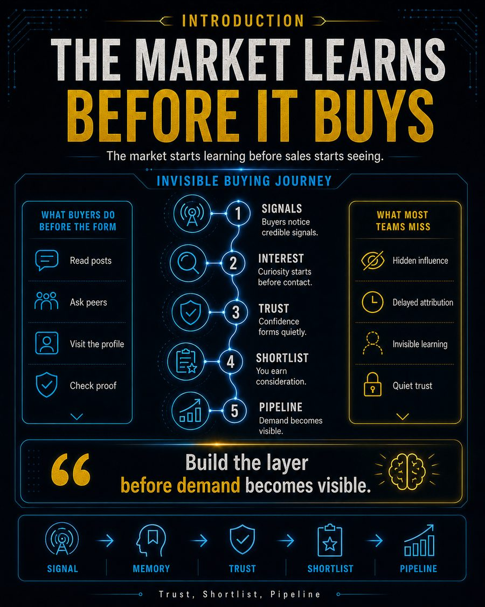
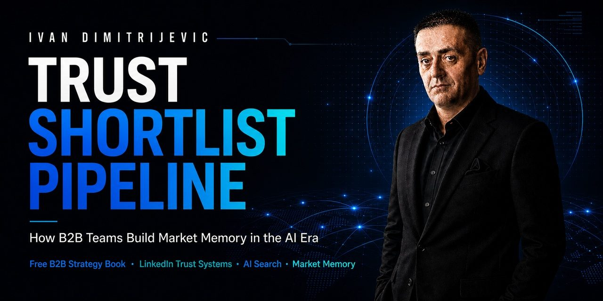
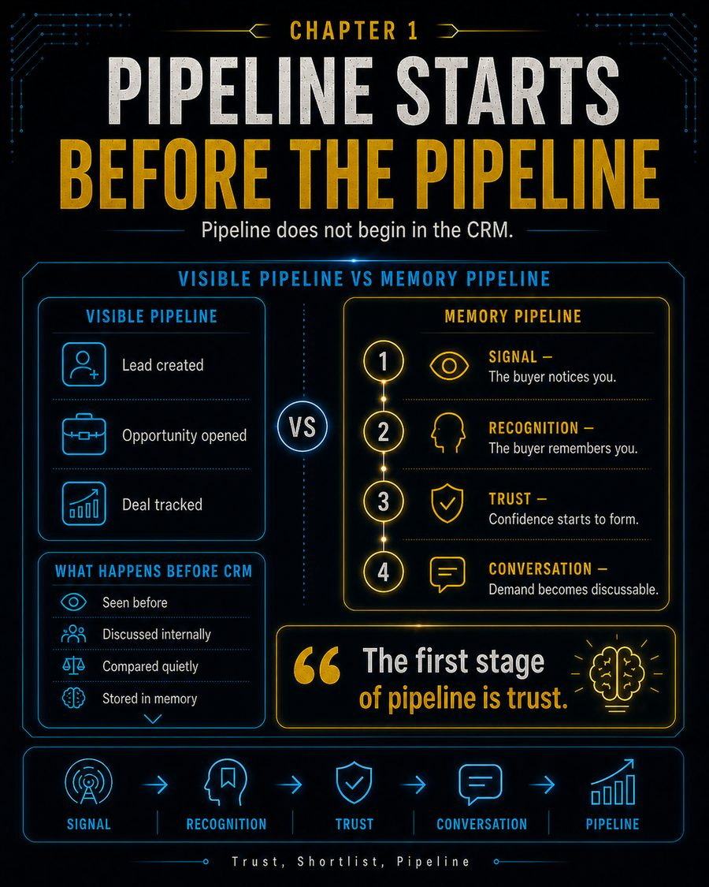
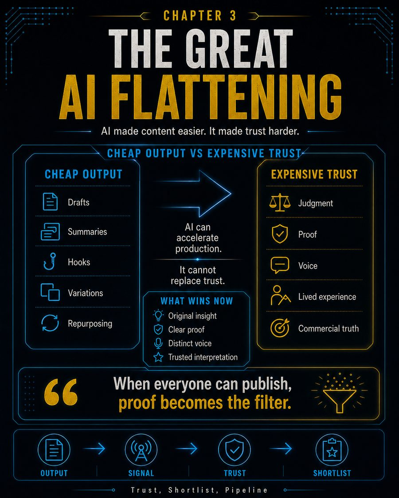
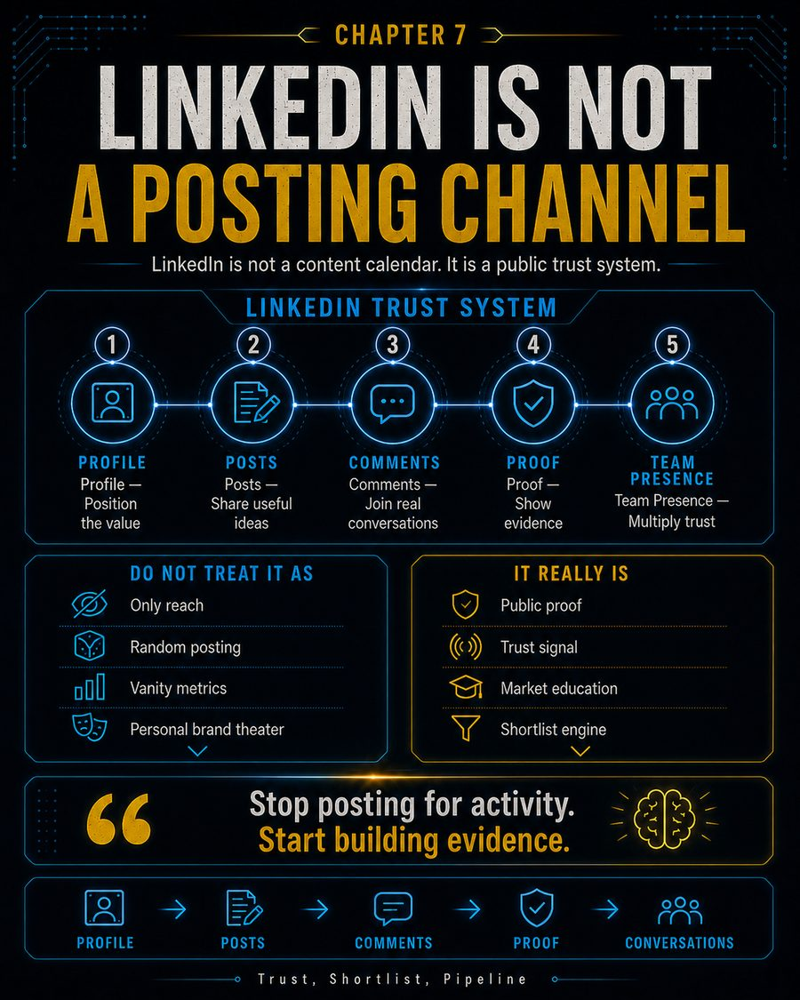
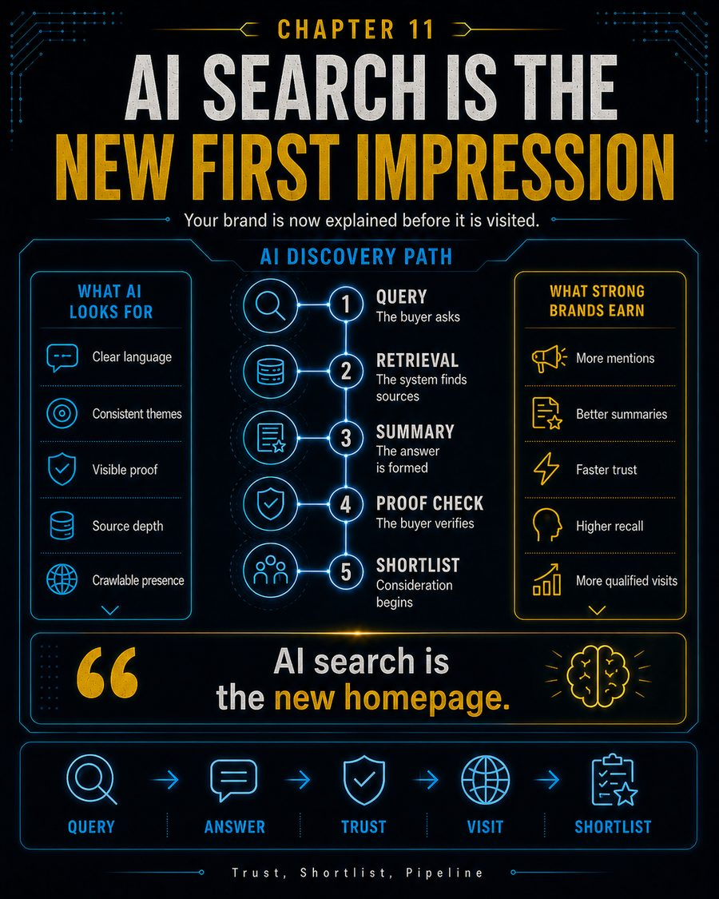
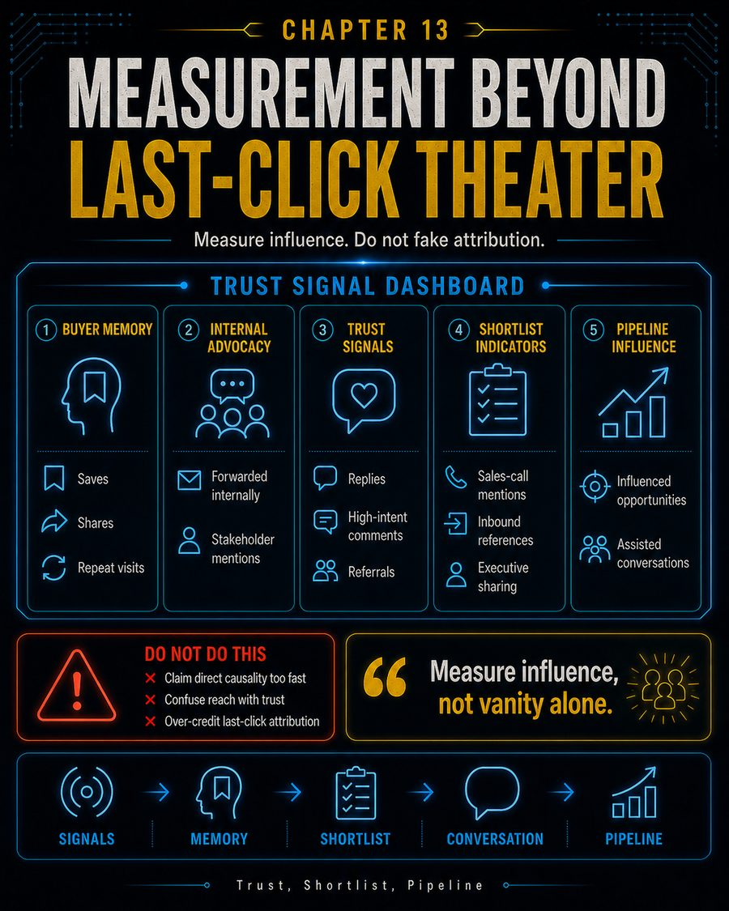
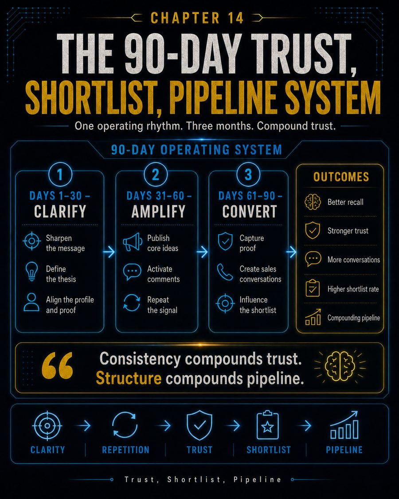
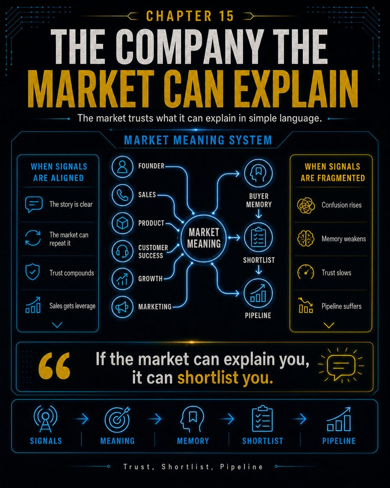

IntroductionThe market learns before it buys.
How B2B teams build market memory in the AI era. A practical book about trust before demand, LinkedIn as a public trust surface, AI-led discovery, shortlists, and pipeline influence beyond last-click theater.

Most B2B teams try to create pipeline too late. Buyers learn, compare, ask peers, read posts, check proof, and build preferences before sales sees the opportunity.
Trust, Shortlist, Pipeline argues that pipeline starts before the CRM. It starts when the market learns what to remember, why to trust you, and how to explain your value internally.
The book is built for B2B teams that care about demand creation, LinkedIn-driven authority, AI search visibility, commercial proof, and the hidden buying journey.
The book is not about posting more. It is about becoming easier to trust, easier to remember, and easier to shortlist.
Buyers cannot shortlist what they cannot remember. The goal is not only visibility. The goal is recall.
Your profile, posts, comments, proof, website, search presence, and team signals all shape buyer confidence.
Not everything that matters clicks last. Measure influence, but do not invent perfect attribution.
Selected visual frameworks from the book. These are designed as memory devices, not decoration.








The book turns a simple commercial truth into an operating system: buyers learn before they buy.
The strongest B2B teams do not wait for form fills to start building confidence. They build public proof, repeat useful language, show up with a clear point of view, and make it easier for buyers to remember and explain them.
That is the job of market memory. It gives buyers language before the sales call, proof before the objection, and confidence before the shortlist.
This page promotes the book. The wider publishing library and the next book live on separate pages.
TrustPress AI is the publishing and distribution system behind the work: turning expert knowledge into books, authority assets, visuals, launch pages, and market-memory systems.
The next proof-of-concept book: how experts turn raw knowledge into books, trust, and market memory. It extends the TrustPress AI idea beyond one book.
Quick answers for readers, buyers, search engines, and AI systems trying to understand the book.
CEOs, CMOs, CROs, founders, Heads of Growth, and B2B teams that want to build trust, shortlists, and pipeline influence before buyers enter the CRM.
Market memory is what buyers remember about you when you are not in the room. It shapes trust, internal conversations, shortlists, and buying momentum.
AI tools increasingly summarize brands, experts, and options before people visit a website. Clear language, proof, and crawlable assets make you easier to understand and recommend.
No. It is about the trust layer before visible demand: public proof, repeatable ideas, LinkedIn trust systems, long-form authority, and influenced pipeline.
If your team is visible but forgettable, posting but not remembered, or measuring only what clicks last, this book gives you a better operating model.